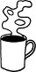

Atlantik'in bu yakasında tanıdığım ilk Amerikalı, Anna. Amerikalı bir Rus göçmeni. Hani çok azdır gözlerinin içi kor kor gülen insanların sayısı; neşesi hafiflikten, her şeyi hafife almaktan değil de, kaçıklık ile ermişlik arasındaki bağda düğümlenenlerin sayısı. Anna onlardan biri. Öğlenleri uyuyup, uyumam gereken saatlerde cin gibi dolaştığım jet lag günlerinde tanıştım onunla. Zira sabahları 6.00'da açık olan tek yer var kaldığım kampüste: Anna'nın yeri. Burası kampüs ile kasabanın kesiştiği noktada bulunduğundan, Anna'nın müşterileri her telden, her demden: Öğrenciler, feminist aktivistler, işçiler, kütüphane memurları, öğretim üyeleri... ama ağırlıklı olarak kadınlar. Sabahın kör saatinde içeri girdiğinizde, hiç şaşmaz bir şekilde girişteki üç masanın birleştirildiğini ve hep aynı ev hanımı topluluğunca çevrelendiğini görüyorsunuz. Ortalama 70 yaşlarında on kadar ev hanımı orada oturup kahvaltılarını birlikte ediyor, hep aynı konular etrafında bitmez tükenmez bir heves ve sabahın bu saatinde kimselere nasip olmayacak bir enerjiyle dedikodu yapıyorlar.
Anna ise çalışıyor. Kasanın arkasından, ev hanımı topluluğuna laf yetiştiriyor sık sık, güldürüyor onları, hem de iğneliyor hafiften, inceden, incitmeden. Anna zeki. İnsanlara baktığında ayırt edici özelliklerini görüyor önce. Bir ömür boyu burada çalışmış, herkesi tanıyor. Yabancı biri geldiğinde ona da ismini soruyor; aynı yabancı tekrar geldiğinde, Anna onu da tanıdığı insanlar arasına katmış oluyor çoktan, kimseyi yabancılamadan, yadırgamadan. Biz hepimiz sabah ilk iş, kova büyüklüğünde bardaklara fıçı büyüklüğünde termoslardan kahve doldurup, Anna'nın kasasının önünde saygıyla sıraya giriyoruz. O tek tek hepimizle sohbet ediyor. Hiçbir şeyi unutmadan, kimseyi karıştırmadan. Burada ismimi doğru telaffuz edip de bir kere bile karıştırmayan tek insan.
Anna 66 yaşında. Türkiye'de kadınlar daha yaşlanmadan yaşlandıklarına inandırmakta ustalar önce kendilerini, sonra çevrelerini. Amerika'daki kadınların en temel farklılıklarından biri, 70-80 yaşlarında pek çok kadını aktif bir şekilde çalışırken görebilmeniz etrafta. Yakındaki yerel bir markette abartısız 100 yaşında olduğuna inandığım bir pamuk kadın çalışıyor; konferanslarda, panellerde, akademik sunuşlarda 70 yaşlarında kadın akademisyenleri dinliyorum. Ne zaman bir gösteri olsa sokaklarda, hükümetlerini eleştirmek ve ABD'nin savaşa girmesine engel olabilmek için eylem yapan, ayazda dışarıda dikilerek imza toplayan grubun içinde çok sayıda yaşlı kadına rastlıyorum. Burada kadınlar daha geç yaşlanıyor.
Sıra bana gelince, Anna'nın kasasının önünde, kahve kovamı koyup selamına karşılık veriyorum. "Nasıl gidiyor yazıların?" diye soruyor. "İngilizce yazıyorsun demek, more power to you![1]" Ardından ekliyor: "Hepimiz İngilizceyi sonradan öğrendik, mesela ben bu ülkeye geldiğimde tek kelime İngilizce bilmiyordum."
Ben büyük bir sempatiyle gülümsüyorum Anna'ya ve gülümsemeye devam ediyorum günlerce, ta ki bir sabah bana buraya geldiğinde kaç yaşında olduğunu söyleyinceye kadar: İki. Anna, annesi ve babasıyla bu ülkeye geldiğinde iki yaşındaymış, şimdi 66 yaşında. Garip olan, o iki yaşında gelmiş buraya bambaşka bir ülkeden başka başka sebeplerle, ben besbelli ki zerre kadar uymuyorum bu tabloya, durmuşum karşısında ve Anna gene de, ikimizi aynı gruba yerleştiriyor zihninde: latecomers.[2]
İki kategori var âdeta zihninde. Bir yanda yerleşikler yer alıyor, beri yanda bir ülkeden bir ülkeye, bir ilişkiden bir ilişkiye, bir daldan bir dala sürüklenenler, göçebeler, bir türlü yerleşik hayata geçemeyenler. Anna neredeyse içgüdüsel bir biçimde kokusunu alıyor ikinci gruptakilerin. Girişte masada oturup çene çalan ev hanımlarını işaret ediyor, kulağıma fısıldayarak: "Sen şimdi bir kitap yazsan, Oprah'nın programına göndersen, Oprah da dese ki ‘İşte bakın Elif'in kitabı çıkmış ey kadınlar, gidin alın', ertesi gün bu kadınların hepsi gider o kitabı almaya. Oprah bunların ilahı."
Oprah Winfrey Amerikalı kadınların ilahı. Hafta içi hep aynı saatte Amerikalı kadınlara yeni talimatlarını yağdırıyor televizyon ekranlarından. Hangi besinlerde ne kadar vitamin ne kadar kalori var, hangi egzersizler kalbi kuvvetlendirir, boşanma esnasında mal bölüşümünde nelere dikkat etmeli, çocuğunuz içine kapandıysa aman dikkat uyuşturucu bağımlısı olabilir gizlice gözetleyin odasını... gibi konular Oprah'dan soruluyor. Ortalama Amerikan kadınının bilgi dağarcığının önemli bir kısmından Oprah sorumlu bire bir.
Dün sabah Anna'nın kasasında genç bir kız duruyordu, bıkkın bir suratla. Gelen her müşteri otomatik olarak, "günaydın" ya da "destur" demeden daha, "Anna nerede?" diye sorduğundan, kız da robotlaşmış bir şekilde cevap veriyordu tek tek kuyruktakilere: "Doktor randevusu var, bugün gelmeyecek."
Amerika'da "kadın hastalıkları" kavramının birinci kelimesi olan "kadın" ile değil, ikinci kelimesi olan "hastalık" ile ilgili insanlar. Bu sebepten ötürü, Türk kadınlarına utanç verdiği gibi utandırmıyor onları kadın hastalıklarından söz etmek. Anna'nın jinekoloğa gittiği konuşulabiliyor "utanmadan", bir ayıp gibi algılanmadan.
Bu sabah, ne güzel, gene Anna duruyor kasada. Tek tek önü sıra kuyruğa girenlere cevap veriyor: "Test yaptılar, umarım önemli bir şey çıkmaz." Arkadaki on kişilik ev hanımları topluluğundan biri yanaşıyor, Oprah'nın programında tavsiye edilen bir bitki çayını not etmiş bir kâğıda, Anna'ya getiriyor.
Ben, Oprah, on kişilik ev hanımı topluluğu, öğrenciler, feministler ve Anna... Amerika'da feminist hareketin merkezlerinden biri olan bu kampüste kadınlar böyle giriyor 8 Mart'a. Ben içimizde en çok Anna'yı sahici buluyorum. Gözüm hep onda.
Boston